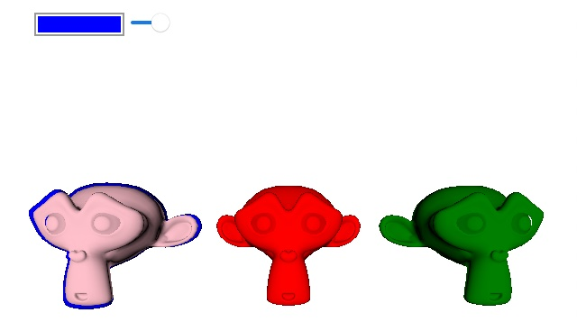

Qt Quick 3D - Stencil Outline Extension Example
Demonstrates how the QtQuick3D Render Extension can be used to implement stencil outlining.

This example shows how the QtQuick3D Render Extensions can be used to add support for stencil outlining.
The first step is to implement the front-end item by creating a new Render Extension item which exposes the properties needed to QML. In this example we expose 3 properties, a target which takes the model we want to outline, the material we want to use for the outline, and a scale value for adjusting the size of the outline.
class OutlineRenderExtension : public QQuick3DRenderExtension { Q_OBJECT Q_PROPERTY(QQuick3DObject * target READ target WRITE setTarget NOTIFY targetChanged) Q_PROPERTY(QQuick3DObject * outlineMaterial READ outlineMaterial WRITE setOutlineMaterial NOTIFY outlineMaterialChanged) Q_PROPERTY(float outlineScale READ outlineScale WRITE setOutlineScale NOTIFY outlineScaleChanged) QML_ELEMENT public: OutlineRenderExtension() = default; ~OutlineRenderExtension() override; float outlineScale() const; void setOutlineScale(float newOutlineScale); QQuick3DObject *target() const; void setTarget(QQuick3DObject *newTarget); QQuick3DObject *outlineMaterial() const; void setOutlineMaterial(QQuick3DObject *newOutlineMaterial); signals: void outlineColorChanged(); void outlineScaleChanged(); void targetChanged(); void outlineMaterialChanged(); protected: QSSGRenderGraphObject *updateSpatialNode(QSSGRenderGraphObject *node) override; private: enum Dirty : quint8 { Target = 1 << 0, OutlineMaterial = 1 << 1, OutlineScale = 1 << 2 }; using DirtyT = std::underlying_type_t<Dirty>; void markDirty(Dirty v); QPointer<QQuick3DObject> m_target; QPointer<QQuick3DObject> m_outlineMaterial; float m_outlineScale = 1.05f; DirtyT m_dirtyFlag {}; };
The second step is to implement the back-end Render Extension class, this is the class that contains the code that will be run by QtQuick3D.
For this extension we'll be rendering after the built-in color-pass, and we'll want to render as part of the main render pass, so we'll return PostColor and Main in in our QSSGRenderExtension::stage() and QSSGRenderExtension::mode() functions respectively.
class OutlineRenderer : public QSSGRenderExtension { public: OutlineRenderer() = default; bool prepareData(QSSGFrameData &data) override; void prepareRender(QSSGFrameData &data) override; void render(QSSGFrameData &data) override; void resetForFrame() override; RenderMode mode() const override { return RenderMode::Main; } RenderStage stage() const override { return RenderStage::PostColor; }; QSSGPrepContextId stencilPrepContext { QSSGPrepContextId::Invalid }; QSSGPrepContextId outlinePrepContext { QSSGPrepContextId::Invalid }; QSSGPrepResultId stencilPrepResult { QSSGPrepResultId::Invalid }; QSSGPrepResultId outlinePrepResult { QSSGPrepResultId::Invalid }; QPointer<QQuick3DObject> model; QSSGNodeId modelId { QSSGNodeId::Invalid }; QPointer<QQuick3DObject> material; QSSGResourceId outlineMaterialId {}; float outlineScale = 1.05f; QSSGRenderablesId stencilRenderables; QSSGRenderablesId outlineRenderables; };
The next function that needs to be implement is QSSGRenderExtension::prepareData(), this function should collect and set-up the data this extension will be using for rendering. If there's nothing to render this function should return false.
bool OutlineRenderer::prepareData(QSSGFrameData &data) { // Make sure we have a model and a material. if (!model || !material) return false; modelId = QQuick3DExtensionHelpers::getNodeId(*model); if (modelId == QSSGNodeId::Invalid) return false; outlineMaterialId = QQuick3DExtensionHelpers::getResourceId(*material); if (outlineMaterialId == QSSGResourceId::Invalid) return false; // This is the active camera for the scene (the camera used to render the QtQuick3D scene) QSSGCameraId camera = data.activeCamera(); if (camera == QSSGCameraId::Invalid) return false; // We are going to render the same renderable(s) twice so we need to create two contexts. stencilPrepContext = QSSGRenderHelpers::prepareForRender(data, *this, camera, 0); outlinePrepContext = QSSGRenderHelpers::prepareForRender(data, *this, camera, 1); // Create the renderables for the target model. One for the original with stencil write, and one for the outline model. // Note that we 'Steal' the model here, that tells QtQuick3D that we'll take over the rendering of the model. stencilRenderables = QSSGRenderHelpers::createRenderables(data, stencilPrepContext, { modelId }, QSSGRenderHelpers::CreateFlag::Steal); outlineRenderables = QSSGRenderHelpers::createRenderables(data, outlinePrepContext, { modelId }); // Now we can start setting the data for our models. // Here we set a material and a scale for the outline QSSGModelHelpers::setModelMaterials(data, outlineRenderables, modelId, { outlineMaterialId }); QMatrix4x4 globalTransform = QSSGModelHelpers::getGlobalTransform(data, modelId); globalTransform.scale(outlineScale); QSSGModelHelpers::setGlobalTransform(data, outlineRenderables, modelId, globalTransform); // When all changes are done, we need to commit the changes. stencilPrepResult = QSSGRenderHelpers::commit(data, stencilPrepContext, stencilRenderables); outlinePrepResult = QSSGRenderHelpers::commit(data, outlinePrepContext, outlineRenderables); // If there's something to be rendered we return true. const bool dataReady = (stencilPrepResult != QSSGPrepResultId::Invalid && outlinePrepResult != QSSGPrepResultId::Invalid); return dataReady; }
If QSSGRenderExtension::prepareData() returned true the next function to be called is QSSGRenderExtension::prepareRender(). In this function we'll set-up the pipeline state for our two renderables and tell QtQuick3D to prepare the primitives etc. for the renderables by calling QSSGRenderHelpers::prepareRenderables().
void OutlineRenderer::prepareRender(QSSGFrameData &data) { Q_ASSERT(modelId != QSSGNodeId::Invalid); Q_ASSERT(stencilPrepResult != QSSGPrepResultId::Invalid && outlinePrepResult != QSSGPrepResultId::Invalid); const auto &ctx = data.contextInterface(); if (const auto &rhiCtx = ctx->rhiContext()) { const QSSGRhiGraphicsPipelineState basePs = data.getPipelineState(); QRhiRenderPassDescriptor *rpDesc = rhiCtx->mainRenderPassDescriptor(); const int samples = rhiCtx->mainPassSampleCount(); { // Original model - Write to the stencil buffer. QSSGRhiGraphicsPipelineState ps = basePs; ps.flags |= { QSSGRhiGraphicsPipelineState::Flag::BlendEnabled, QSSGRhiGraphicsPipelineState::Flag::DepthWriteEnabled, QSSGRhiGraphicsPipelineState::Flag::UsesStencilRef, QSSGRhiGraphicsPipelineState::Flag::DepthTestEnabled }; ps.stencilWriteMask = 0xff; ps.stencilRef = 1; ps.samples = samples; ps.cullMode = QRhiGraphicsPipeline::Back; ps.stencilOpFrontState = { QRhiGraphicsPipeline::Keep, QRhiGraphicsPipeline::Keep, QRhiGraphicsPipeline::Replace, QRhiGraphicsPipeline::Always }; QSSGRenderHelpers::prepareRenderables(data, stencilPrepResult, rpDesc, ps); } { // Scaled version - Only draw outside the original. QSSGRhiGraphicsPipelineState ps = basePs; ps.flags |= { QSSGRhiGraphicsPipelineState::Flag::BlendEnabled, QSSGRhiGraphicsPipelineState::Flag::UsesStencilRef, QSSGRhiGraphicsPipelineState::Flag::DepthTestEnabled }; ps.flags.setFlag(QSSGRhiGraphicsPipelineState::Flag::DepthWriteEnabled, false); ps.stencilWriteMask = 0; ps.stencilRef = 1; ps.cullMode = QRhiGraphicsPipeline::Back; ps.stencilOpFrontState = { QRhiGraphicsPipeline::Keep, QRhiGraphicsPipeline::Keep, QRhiGraphicsPipeline::Replace, QRhiGraphicsPipeline::NotEqual }; QSSGRenderHelpers::prepareRenderables(data, outlinePrepResult, rpDesc, ps); } } }
When the engine is ready to record the rendering calls for our extension it wll call the virtual QSSGRenderExtension::render() function. In this example we can simply call QSSGRenderHelpers::renderRenderables() for the two models, they will then be rendered just the same way as QtQuick3D would have done internally, only this time with our settings.
void OutlineRenderer::render(QSSGFrameData &data) { Q_ASSERT(stencilPrepResult != QSSGPrepResultId::Invalid); const auto &ctx = data.contextInterface(); if (const auto &rhiCtx = ctx->rhiContext()) { QRhiCommandBuffer *cb = rhiCtx->commandBuffer(); cb->debugMarkBegin(QByteArrayLiteral("Stencil outline pass")); QSSGRenderHelpers::renderRenderables(data, stencilPrepResult); QSSGRenderHelpers::renderRenderables(data, outlinePrepResult); cb->debugMarkEnd(); } }
The OutlineRenderExtension is made active by adding it to the View3D's extensions property.
View3D { id: view3d anchors.topMargin: 100 anchors.fill: parent extensions: [ OutlineRenderExtension { id: outlineRenderer outlineMaterial: outlineMaterial } ]
Now when a model is picked we just need to set the picked model as the target for the OutlineRenderExtension to have it rendered with an outline.
MouseArea {
anchors.fill: view3d
onClicked: (mouse)=> {
let hit = view3d.pick(mouse.x, mouse.y)
outlineRenderer.target = hit.objectHit
}
}
Files:
- extensions/stenciloutline/CMakeLists.txt
- extensions/stenciloutline/ColorPicker.qml
- extensions/stenciloutline/Main.qml
- extensions/stenciloutline/QtQuick3D/Examples/OutlineRenderExtension/ColorPicker.qml
- extensions/stenciloutline/QtQuick3D/Examples/OutlineRenderExtension/Main.qml
- extensions/stenciloutline/QtQuick3D/Examples/OutlineRenderExtension/SectionLayout.qml
- extensions/stenciloutline/QtQuick3D/Examples/OutlineRenderExtension/qmldir
- extensions/stenciloutline/QtQuick3D/Examples/OutlineRenderExtension/stenciloutline_qml_module_dir_map.qrc
- extensions/stenciloutline/SectionLayout.qml
- extensions/stenciloutline/main.cpp
- extensions/stenciloutline/outlinerenderextension.cpp
- extensions/stenciloutline/outlinerenderextension.h
- extensions/stenciloutline/shaders/huesaturation.frag
Images:
- extensions/stenciloutline/QtQuick3D/Examples/OutlineRenderExtension/images/TreeExpanded.png
- extensions/stenciloutline/QtQuick3D/Examples/OutlineRenderExtension/images/TreeUnexpanded.png
- extensions/stenciloutline/QtQuick3D/Examples/OutlineRenderExtension/images/grid_8x8.png
- extensions/stenciloutline/images/TreeExpanded.png
- extensions/stenciloutline/images/TreeExpanded@2x.png
- extensions/stenciloutline/images/TreeExpanded@3x.png
- extensions/stenciloutline/images/TreeExpanded@4x.png
- extensions/stenciloutline/images/TreeUnexpanded.png
- extensions/stenciloutline/images/TreeUnexpanded@2x.png
- extensions/stenciloutline/images/TreeUnexpanded@3x.png
- extensions/stenciloutline/images/TreeUnexpanded@4x.png
- extensions/stenciloutline/images/grid_8x8.png
{kind=link}
{kind=link}
{kind=link}
{kind=link}
{kind=link}
{kind=link}
{kind=link}
{kind=link}
{kind=link}
{kind=link}
{kind=link}
{kind=link}